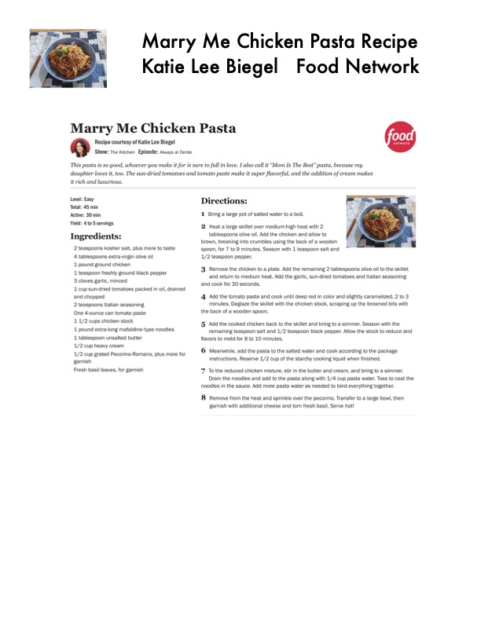

Marry Me Chicken Pasta Recipe

Original cookbook page 764
Ingredients
- 2 teaspoons kosher salt, plus more to taste
- 4 tablespoons extra-virgin olive oil
- 1 pound ground chicken
- 11 teaspoon freshly ground black pepper
- 3 cloves garlic, minced
- and chopped
- 2 teaspoons Italian seasoning
- One 4-ounce can tomato paste
- 1.1/2 cups chicken stock
- 1 pound extra-long mafaldine-type noodles
- 1 tablespoon unsalted butter
- 1/2 cup heavy cream
- 1/2 cup grated Pecorino-Romano, plus more for
- garnish
- Fresh basil leaves, for garnish
Instructions
- Bring a large pot of salted water to a boil.
- Heat a large skillet over medium-high heat with 2 tablespoons olive oil. Add the chicken and allow to brown, breaking into crumbles using the back of a wooden spoon, for 7 to 9 minutes. Season with 1 teaspoon salt and 1/2 teaspoon pepper.
- Remove the chicken to a plate. Add the remaining 2 tablespc and return to medium heat. Add the garlic, sun-dried tomato and cook for 30 seconds. 4, Add the tomato paste and cook until deep red in color and sI minutes. Deglaze the skillet with the chicken stock, scraping the back of a wooden spoon.
- Add the cooked chicken back to the skillet and bring to a sim remaining teaspoon salt and 1/2 teaspoon black pepper. All flavors to meld for 8 to 10 minutes.
- Meanwhile, add the pasta to the salted water and cook acco
- To the reduced chicken mixture, stir in the butter and cream, Drain the noodles and add to the pasta along with 1/4 cup p noodles in the sauce. Add more pasta water as needed to bind «
- Remove from the heat and sprinkle over the pecorino. Trans| garnish with additional cheese and torn fresh basil. Serve ho
Recipe #764 from collection